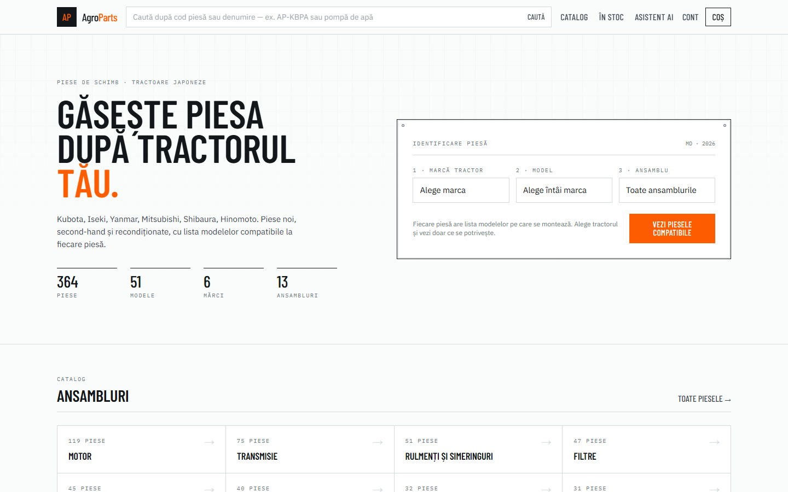
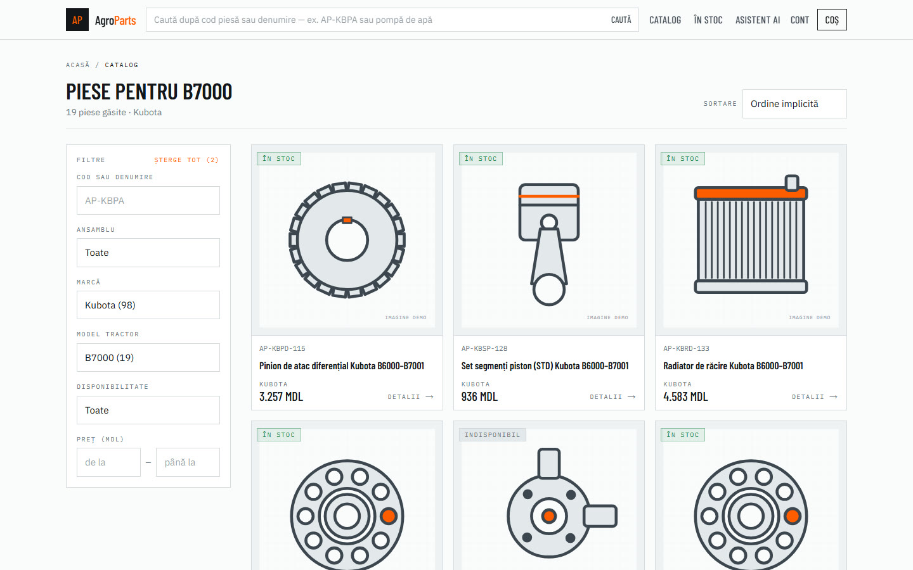
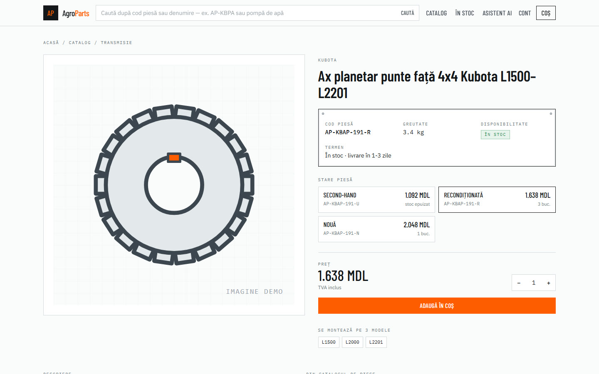
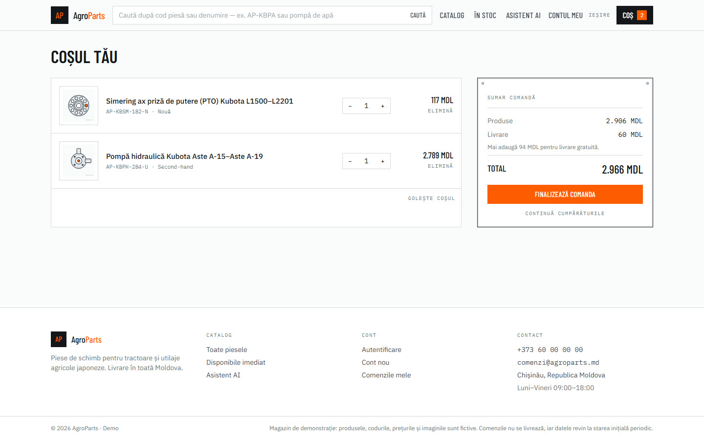
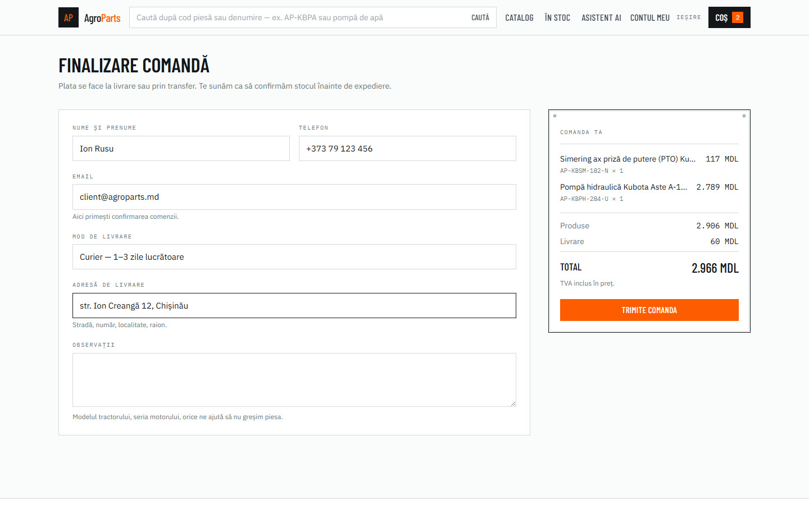
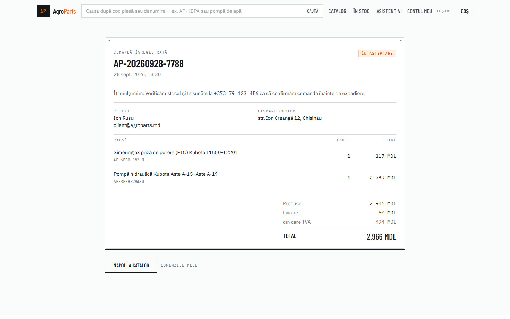
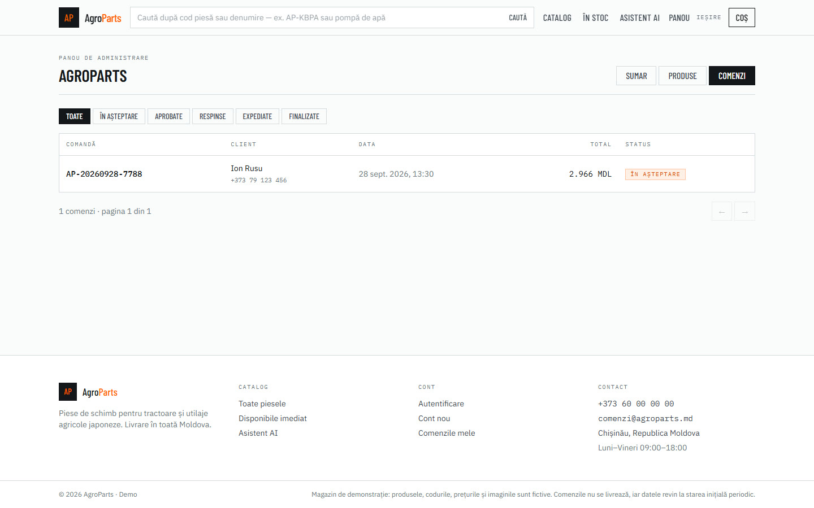
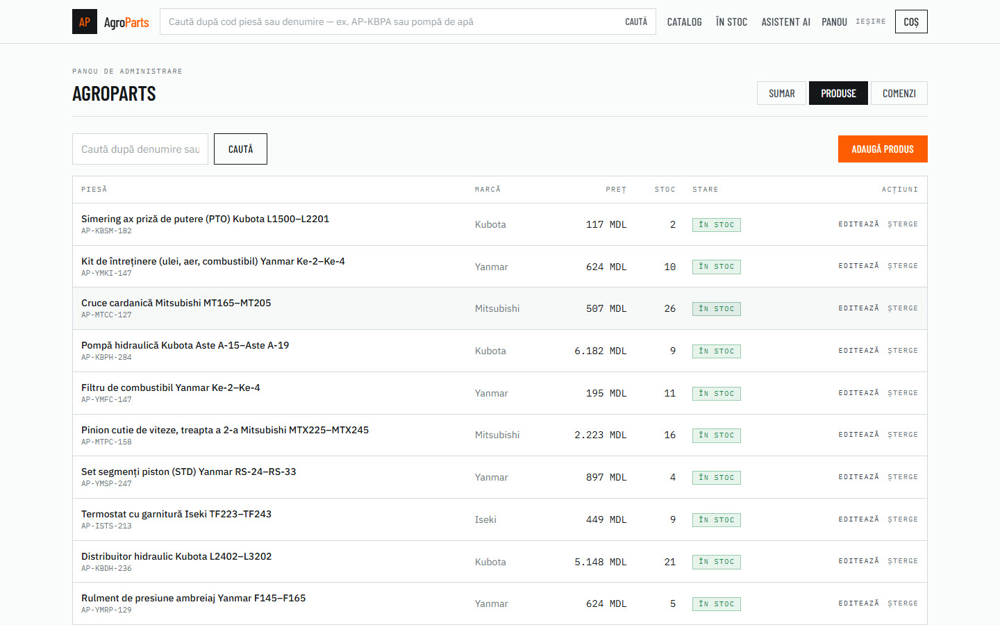
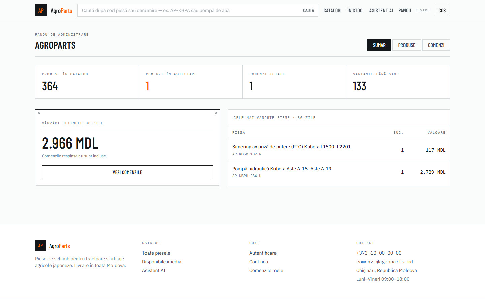

Magazin online de piese de schimb pentru tractoare japoneze, construit ca demo pentru o firmă de piese agricole din Moldova. Clientul își caută piesa după tractorul lui, vede ce variante există, pune în coș și trimite comanda. Magazinul își administrează produsele, prețurile și comenzile dintr-un panou propriu.
2026Next.js · Fastify · PostgreSQLdezvoltare asistată de AI (Claude Code)Cont de test pentru panoul de administrare: admin@agroparts.md · parola parola123.
Prima deschidere poate dura câteva secunde: serverul pornește la cerere.








